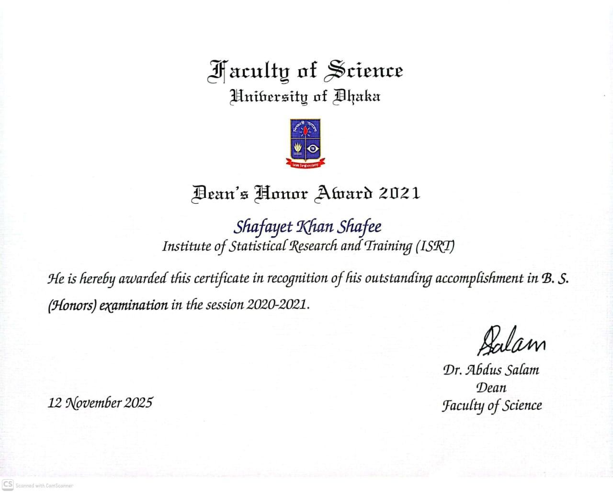

I’m a Data Scientist and Statistician with a focus on applying statistical thinking to real product and business decisions. My interests and expertise lie at the intersection of applied statistics, machine learning, and open-source development — turning rigorous analytical ideas into practical tools, software, and workflows. 1
In my day job, I work as a data scientist, where I spend most of my time building data pipelines and models, designing and analyzing experiments, and applying causal inference and machine learning methods to product and business problems — things like measuring the impact of product rollouts, estimating heterogeneous treatment effects, and modeling repayment risk.
Outside of work, I read and explore a fair bit — mostly around causal inference (IPW, confounding bias, meta-learners, double machine learning, causal forests), Bayesian inference, survival analysis, and lately sensitivity analysis in causal inference. Some of that eventually turns into research; the rest just feeds my curiosity.
I’m also quite enthusiastic about open-source development. I’ve built a few
My published work so far centres on causal inference and hierarchical modeling, with a focus on developing and applying rigorous statistical methods to complex observational data from public health settings.
I have one peer-reviewed publication in PLoS ONE (a Q1 journal) on estimating the causal effect of maternal continuum of care on child nutrition in Bangladesh using multilevel propensity score methods.
Two additional works are currently under review — one on g-computation for causal effect estimation in hierarchical observational data, and one on estimation of the median odds ratio for measuring contextual effects in multilevel binary data — preprints of both are available on arXiv. See full list of publications →
Research Interests
- Causal Inference
- Hierarchical Modeling
- Bayesian Inference
- Sensitivity Analysis
- Survival Analysis
- Conformal Prediction
Data Scientist II @ Pathao Pay
Jan, 2026 - Present
Dhaka, BangladeshData Scientist I @ Pathao Pay
Jan, 2025 - Dec, 2025
Dhaka, BangladeshGraduate Data Scientist @ Pathao Ltd.
July, 2023 - Dec, 2024
Dhaka, Bangladesh
- Statistics & Experimentation: Frequentist & Bayesian Inference, Hypothesis Testing, Causal Inference (IPW, Matching, Diff-in-Diff), A/B Testing, Survival Modeling, Time Series Analysis.
- Machine Learning: Ensemble Methods, Causal ML (Double/Debiased ML, Generalized Random Forests, BART), Conformal Prediction, Model Calibration.
- Data & ML Engineering: dbt, Kedro, MLflow, Docker, Bash Scripting.
- BI & Analytics: BigQuery, Looker Studio, Mixpanel.
- CI/CD & Version Control: GitHub Actions, GitLab CI, Git.
- Programming Languages: R, Python, SQL.
My OSS work spans R, Python, and the Quarto ecosystem. On the R side, I’ve developed MOR and skmisc, and on the Python side, skmiscpy for causal effect estimation and kedrogen, a CLI tool for scaffolding reproducible Kedro project structures. I’ve also built a range of Quarto extensions (e.g., downloadthis, line-highlight, and interactive-sql) to support more efficient scientific publishing workflows.
2023 M.Sc. in Applied Statistics
Grade: 3.97 out of 4.00
ISRT, University of Dhaka, Bangladesh2021 B.Sc. in Applied Statistics
Grade: 3.96 out of 4.00
ISRT, University of Dhaka, Bangladesh2017 H.S.C. (Science)
Grade: 5.00 out of 5.00
Dhaka, Bangladesh
2024 Conference Award for Scientists — ISCB45
Awarded at the 45th Annual Conference of the International Society for Clinical Biostatistics (ISCB45), Thessaloniki, Greece, July 21–25, 2024, for the abstract titled “Interval Estimation of the Median Odds Ratio for Measuring Contextual Effects in Multilevel Data Using a Binary Logistic Model.”
[Abstract Book →]2023 National Science and Technology (NST) Fellowship
Issued by the Ministry of Science and Technology (MoST), Government of Bangladesh, for thesis research on multilevel modeling during M.Sc. at the University of Dhaka.2021 Dean’s Award
Awarded by the Faculty of Science, University of Dhaka, in recognition of academic excellence throughout the B.Sc. programme.
{kind=link}
- Causal Inference
- Experimentation
- Hierarchical Modeling
- Bayesian Inference
- Predictive Modeling
- Time Series Forecasting
- Reproducible Research
- Open Source Contributions
- R & Python Pkg Development
- Data Visualisation & Storytelling
Footnotes
All em-dashes are mine!↩︎